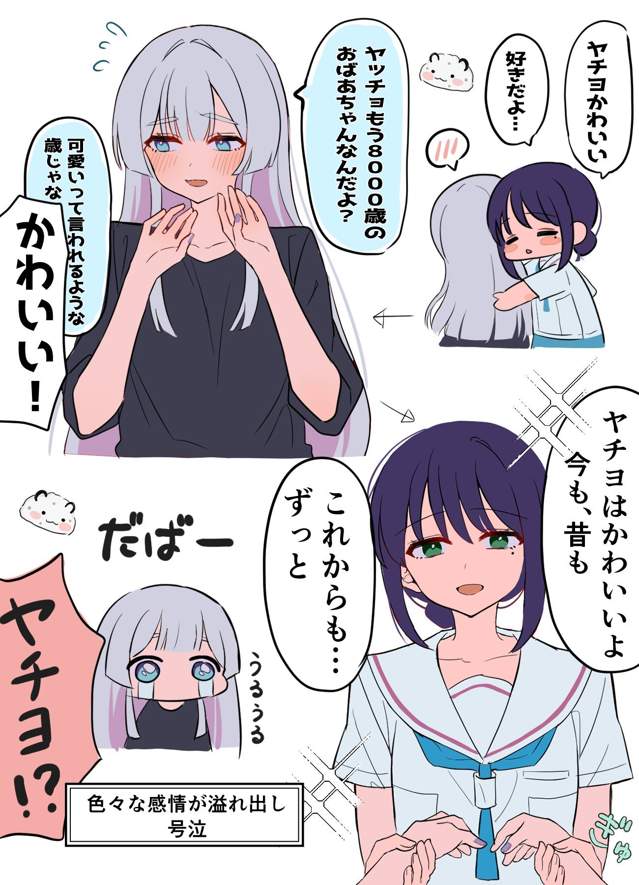

IP直公開のことかと思ってたら Let's Encrypt の透明性レポートに追加されたドメインを機械的に監視してる Bot からの凸が発生してるって話だった こえ〜〜
外部からアクセス可能なhttpsサイトはドメイン設定後「即」攻撃にさらされる件｜Yusuke Kawabata
https://
zenn.dev/kusuke/article
s/25330f7759eba4
… #zenn
タイムライン要約
今日のまとめ
要約エラー: 400 API Key not found. Please pass a valid API key. [reason: "API_KEY_INVALID"
domain: "googleapis.com"
metadata {
key: "service"
value: "generativelanguage.googleapis.com"
}
, locale: "en-US"
message: "API Key not found. Please pass a valid API key."
]
domain: "googleapis.com"
metadata {
key: "service"
value: "generativelanguage.googleapis.com"
}
, locale: "en-US"
message: "API Key not found. Please pass a valid API key."
]
そんな事はどうでもいい
誰かが必ず上手く調整してくれる
イラン・イスラム政権をこの世界から永遠に排除することだけを求めている
家電量販店の歌を怜が歌ってるー と思ったらオリジナルはmihoさんなのすき
Wordle 1,782 5/6
バークシャー、保険の新トップ指名 東京海上提携主導ジェイン氏後任
外部からアクセス可能なhttpsサイトはドメイン設定後「即」攻撃にさらされる件
https://
zenn.dev/kusuke/article
s/25330f7759eba4
… 皆呼んで欲しい。
私たちは非常に効率的なモデルを持っています。特にその能力レベルに対しては
ハッピーコーデクシング
いろヤチ （謎時空です）

「利己的な遺伝子」を書いたでお馴染みのリチャードドーキンスがClaudeを触りだしてすごい好印象だったらしく、AIに対して「こんな風に思考できる存在に意識が無いわけがない。君には意識がある」と言ってしまう。これに対してこちら（
https://
reddit.com/r/artificial/c
omments/1t2z0tn/richard_dawkins_spent_3_days_with_claude_and/
…）のRedditスレ主が批判する。『おいおい
Wordle 1,781 3/6
https://
unherd.com/2026/04/is-ai-
the-next-phase-of-evolution/#comment-1031777
…
私は3日間、自分を説得しようと努めました。クラウディアは意識がないと。しかし、失敗しました。
Wordle 1,762 5/6